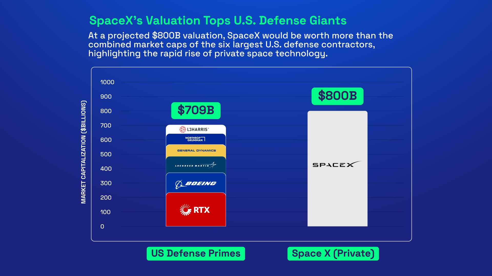
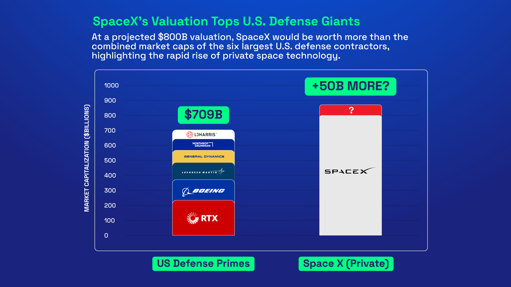
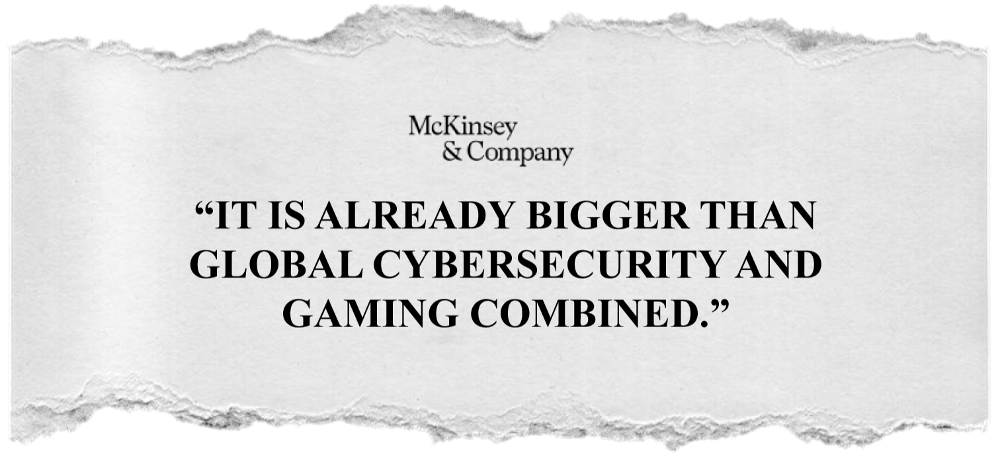
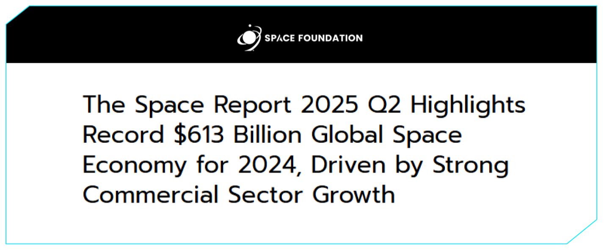
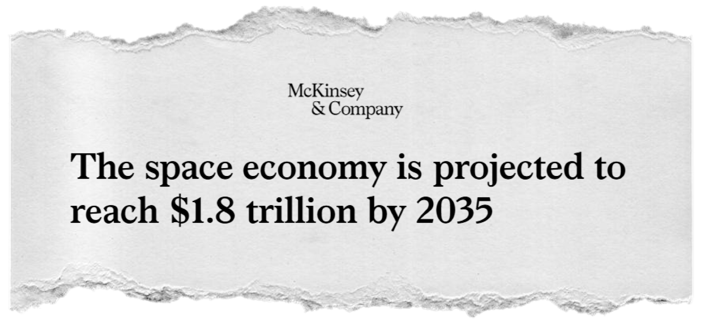
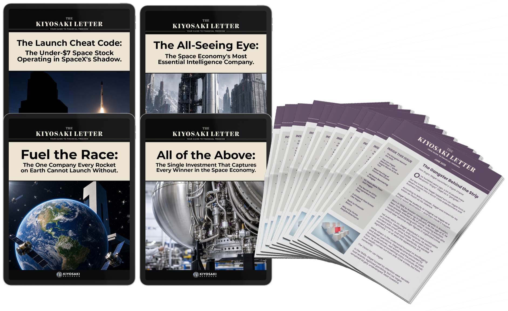
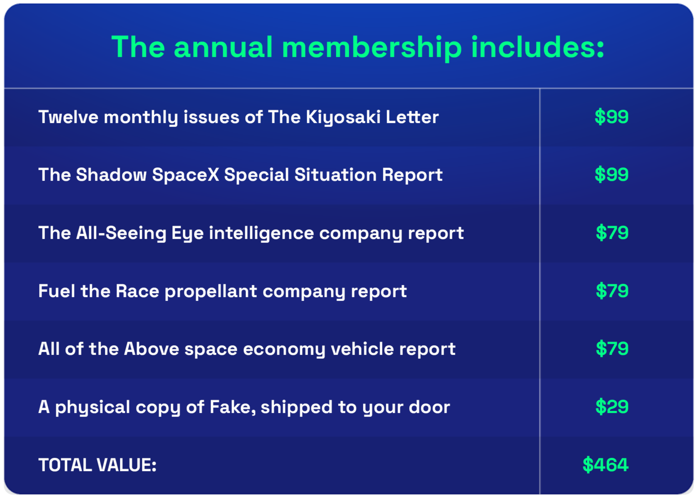
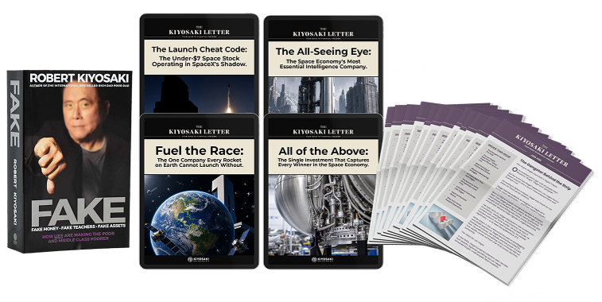

Robert Kiyosaki’s “Financial 007” Found It First
Elon Musk Needs This Small Florida Company to Make SpaceX Profitable
One little-known firm has solved the single biggest cost problem that SpaceX, Blue Origin, and Rocket Lab have never been able to crack.
“We are twice as fast as our competition, and ten times cheaper.”
— The CEO of the Shadow SpaceX, on the launch cheat code that changes everything.
I have a document. It has names on it. Yours is not one of them.
But I have found another list. A much shorter one. And there is still time to get on it.
The last time someone handed me a list like this, the people who acted on it turned a tiny investment into life-changing money.
This one is bigger.
Almost no one in the middle class got rich from the SpaceX IPO.
And I have a document that proves the insiders planned it that way from the very beginning.
But while you were being locked out of SpaceX, something else was happening.
Something the financial press completely missed.
A man I trust more than anyone alive when it comes to finding opportunities that the rest of the world has not found yet…
Dropped a private research dossier on my desk.
And what he found is so close to SpaceX — so literally, physically close — that it operates in SpaceX's shadow.
This company has cracked open what he calls a “launch cheat code.“
A technological edge so significant that every single rocket and space company on earth needs it in order to ever be truly profitable.

And right now, before Wall Street has found it, before the institutions have moved in, you can own shares of this company for less than a monthly streaming subscription you probably forgot you had..
I am going to show you exactly how to get the name of this company and the ticker symbol today, inside a private research dossier I have prepared for you..
But first you need to understand what you are actually looking at.
Because when you see the full picture, the size of this opportunity, why SpaceX was never going to make you rich, and why this shadow company could…
I think you are going to understand why I believe this is the single most exciting speculative opportunity I have seen in years.
Stay with me.
I Flew
Gunships
in Vietnam.
I Have Spent Fifty Years
Learning How Wealth
Actually
Moves.
Here Is Why I Am Telling You This Now.
My name is Robert Kiyosaki.
Some of you already know that name.
Some of you have read Rich Dad Poor Dad, the book that has now sold over 40 million copies and has been on the bestseller lists longer than almost any financial book in history.
Some of you have followed my work for years.
But I want to tell you something about myself that most people do not know.
Or maybe they know it, but they do not know what it actually means.
Before I was an author…
Before I was an investor…
Before Rich Dad, before Poor Dad, before any of it…
I was a Marine.
Not just a Marine.
A combat pilot.
I volunteered.
I want to be clear about that.
I was not drafted.
I was actually exempt from the draft at the time because of my work in the merchant marine.
I could have stayed home.
I chose not to.
Because I asked myself a simple question.
Am I a coward or not?
And I did not like the answer I would have had to give if I stayed home.
So in January of 1972, I flew into Vietnam as a helicopter gunship pilot attached to Marine Medium Helicopter Squadron 264.
Hueys. CH-46s. CH-53s.
I remember the first flight into the combat zone.
Tracer rounds coming up at us out of the darkness.
And me asking — out loud, like an idiot — “Holy… what are those things?”
That was my introduction to war.
And to the most sophisticated flying machines I had ever seen in my life.
Those helicopters represented the absolute cutting edge of what human beings could build at that moment in history.
I was twenty-four years old, sitting inside one of the most advanced pieces of technology on the planet, trying not to get shot.
And I want you to understand something.
Not once.
Not a single time.
Did it ever occur to me that in my own lifetime, private companies would be launching satellites into space from a beach in Florida.
That one man with a vision and a checkbook would build a rocket company in a garage and end up controlling more than 80% of everything humanity sends into orbit.
That there would be a thing called a space economy worth over $600 billion a year.
And growing.
That is how fast the world has changed.
In one lifetime.
My lifetime.
From Hueys over Vietnam…
To a space economy larger than the GDP of most countries on earth.
I tell you this not to impress you.
I tell you this because of what it means for the next fifty years.
Because if the world changed that much between 1972 and today…
Can you imagine what the next fifty years look like?
Can you imagine what a tiny, well-positioned company inside that space economy could be worth by the time your grandchildren are your age?
That is what keeps me up at night.
Not fear.
Excitement.
The same feeling I imagine the people who invested in the very first commercial airlines felt.
Or the first telephone companies.
Or the first automobiles.
The feeling of standing at the beginning of something so large that most people cannot even see the edges of it yet.
The space economy is that thing.
And I am not willing to miss it.
More importantly…
I am not willing to let you miss it.
So before I show you the opportunity my Financial 007 Garrett Baldwin brought me, I need to show you how the game has been rigged against you for the last fifty years — because once you see the pattern, you’ll understand why this one is different.
The Game Is Rigged. It Has Always Been Rigged. And This Time They Left a Paper Trail.
I told you I had the document and I was going to show you exactly how they arranged this.

So let me show you.
But first I need to tell you something that might make you angry.
Because this is not the first time they have done this.
They do it every single time.
Did Mark Zuckerberg call you when Facebook was still just a website running out of his college dorm room?
No.
He did not.
But if he had… and if you had put just $1,000 in at that moment…
That $1,000 would be worth more than $15 million today.

Did Jeff Bezos knock on your door when Amazon was still a tiny bookstore operating out of his garage in Seattle?
No.
He did not.
But if he had… and if you had said yes with just $1,000…
That $1,000 would be worth more than $358 million today.

The people who made those fortunes were not smarter than you.
They were not harder working than you.
They simply got the call and you did not.
Because that is how the system was designed.
Think of it like a match being struck.
The founders.
The earliest investors.
The people who got in when the company was still a dream and a pile of unpaid bills.
Those people are holding the match at the moment it strikes.
Then the match burns a little further.
That is the next wave.
Later private investors.
Big institutions.
People who still got in early enough to feel real heat.
By the time the match reaches your fingers…
By the time the company goes public and your broker sends you an email saying you can now buy shares…
The match has burned all the way down.

It is black. It is charred. There is no flame left.
You are not getting the fire and the ash. That is the SpaceX IPO.
And I am going to prove it to you. But I also want you to hold onto something while I do.
Because at the end of all of this…
There is a much better story waiting for you.
One where you are the person holding the match when it strikes.
Keep that in mind as I show you what is really going on.
Because I am going to show you exactly how they arranged this.
And
then I am
going to hand you a match.
So Why Do They Need You Now?
They Raised $800 Billion Without You.

SpaceX did not need to go public to raise money.
Six months before the IPO, they raised money from private investors at a valuation of $800 billion.
Eight hundred billion dollars. Privately. Without you.
They could have raised another $50 billion tomorrow with a single phone call if they needed to.

They do not need your money. So why go public at all?
Here is why.
Right now, 95% of SpaceX shares are held by insiders.
The founders, the early employees, the private investors who got in years ago.
Those people are sitting on $1.66 trillion in paper wealth.
Paper wealth they currently cannot sell.
The IPO changes that.
It gives the insiders a way out.
It creates a market where they can begin converting those shares into real, spendable cash.
And here is where it gets interesting.
They structured it so that insiders do not even have to wait the standard 180 days that most IPOs require before selling.
SpaceX built in early release provisions.
They are not waiting.
They are already headed for the exit.
And someone has to be standing at that exit, handing them the cash.
That someone is you. It is no coincidence.
Three Rule Changes.
Your Retirement Account Has No Vote.

But it gets worse.
Because while all of this was being arranged behind closed doors…
Something else was happening.
Something that almost no one in the mainstream financial press bothered to cover.
NASDAQ quietly rewrote its rules.
Three specific changes.
And when you see what those three changes actually do…
You will understand exactly what the word coincidence means to the people running this game.
RULE CHANGES
RULE CHANGE #1
Minimum float requirement eliminated
There used to be a rule that said a company had to make at least 10% of its total shares available for regular people to buy and sell before it could be added to the major lists that automatically trigger buying from retirement accounts across America.

SpaceX is only making 4 to 5% of its shares available.
Under the old rules, automatic disqualification.
Under the new rules, that requirement is simply… gone.
It is no coincidence.
RULE CHANGES
RULE CHANGE #2
Waiting period slashed
There used to be a waiting period before a newly listed company could be added to those major lists.
That waiting period existed for a reason.
It gave the market time to figure out what a stock was actually worth before billions of dollars in 401ks and pension funds were automatically required to buy it.

That waiting period used to be three months.
Under the new rules, it has been cut to just 15 trading days.
Three months of price discovery compressed into three weeks.
Which means your retirement account gets automatically required to buy SpaceX shares faster than ever before…
Whether you want them or not…
And whether they are fairly priced or not.
It is no coincidence.
RULE CHANGES
RULE CHANGE #3
The hidden multiplier
This one is the hardest to believe.
Buried in the technical language of the new rules is what I am going to call a hidden multiplier.
For companies that are only making a small percentage of their shares available to the public, NASDAQ now instructs retirement funds and investment funds to act as if that number were three times larger than it actually is.
So if SpaceX makes 5% of its shares available…

The funds holding your retirement money are required to behave as if 15% were available.
They have manufactured demand out of thin air.
They have built a system that forces billions of dollars in retirement money to automatically chase a stock…
Based on a number that does not actually exist.
It is no coincidence.
Let me say all of that together so it is completely clear.
NASDAQ changed the rules so that SpaceX could qualify with only 5% of the company available to the public — a level that would have been rejected six months ago.
NASDAQ changed the rules so that your retirement account gets force-fed SpaceX shares in 15 trading days instead of three months.
And NASDAQ changed the rules so that the funds holding your retirement money must treat SpaceX as three times more available than it actually is, creating demand that did not exist before.
One analyst put it simply.
Your 401k is the exit liquidity.
If you have any kind of retirement account holding U.S. stocks, within a few weeks of the SpaceX listing you are going to own some SpaceX stock.
You will not have a choice.
The rules will simply buy it for you.
You now know how the match was taken from you.
What I am about to show you is where the next one is.
Change number one.
Elon Said Regular People Deserve a Seat at the Table.
(The Minimum Balance Is $500,000.)
Now here is the part the press is spinning as good news for regular people.
SpaceX announced they are reserving 30% of the IPO shares for everyday investors.
And the headlines celebrated this.
“Elon is being so generous.”
“Regular people get the same price as the big banks.”
But let me show you what the fine print actually says.

To participate in the IPO through Fidelity, one of the brokerages SpaceX named in its own filing…
You need a minimum account balance of $100,000.
To participate through Charles Schwab, another named brokerage…
You also need a minimum account balance of $100,000.
The CFO of SpaceX told a room full of bankers — on the record — that retail investors have been incredibly loyal to Elon and deserve to participate in this IPO.
Ask yourself one question.
When has Wall Street ever given regular people the best seats in the house…
Unless regular people were the product?
If SpaceX Lies and You Lose Everything, You Are Screwed.
And there is one more thing buried in that document.
Something so one-sided that the pension funds for New York City teachers, New York State employees, and California public workers all wrote a formal letter of protest the moment they read it.
When you purchase a share of SpaceX…
You permanently sign away your right to take them to court.
You sign away your right to join with other investors in a lawsuit if things go wrong.
If SpaceX deceives you, if the stock collapses because of something the insiders knew and you did not, if you lose everything…
Your only option is their own private dispute process.
A process they control.
An arbitrator they effectively choose.
A system designed by the same people you would be complaining about.
Now here is what makes this different from any other stock you have ever considered buying.
Mandatory arbitration clauses like this one were actually illegal in the United States for over thirty years.
And to the knowledge of the pension funds and investor protection groups who reviewed the SpaceX filing…
SpaceX is the first major company in American history to include this clause in a public stock offering.
Not one of the first. The first.
They did not just find a loophole. They waited for the loophole to be created…
And then they walked right through it.
It is not a coincidence.
When Elon Needed Billions, He Didn't Text You.
Here's Who He Did Text.
I want to show you one more thing.
One piece of evidence that makes all of this impossible to dismiss.
When Elon Musk was raising money to buy Twitter — the platform that later became X — he did not send you a text message.
He texted Larry Ellison. The founder of Oracle.
One of the wealthiest men on earth.
We know this because those actual text messages were submitted as evidence in a lawsuit.
You can read them right here.

Just like that.
A casual back and forth.
One billion dollars.
Now here is why that matters to you today.

Twitter became X.
X was folded into xAI, Elon's artificial intelligence company.
And xAI was folded into SpaceX.
Which means that $1 billion Larry Ellison committed in a casual four-line text message…
Is sitting inside one of the most valuable companies in the history of the stock market.
You did not get that text and you were never going to get that text.
That is how they designed the system.
It is not an accident or a coincidence and was never be a coincidence.
But here is what they did not design.
They did not design for someone to find the next match before it was lit.
And that is exactly what has happened.
They Lit Their Match.
Here Is Yours.
So that is the SpaceX IPO.
That is who it was built for.
That is who walks away wealthy.
But here is what I promised you at the beginning of this presentation.
There is another side to this story.
Garrett Baldwin found something.
Something hiding right next door to all of this.
A tiny company, operating in SpaceX's literal shadow, that has done something no one else in the space industry has been able to do.
And right now, before the institutions find it, before Wall Street moves in, before the match has even been struck…
I Do Not Make a Move Without This Man.
Here Is Why.
But here is what I have learned after decades of investing.
Being excited about an opportunity is not enough.
Knowing an industry is going to be enormous is not enough.
You have to find the right door.
At the right moment.
Before everyone else finds it.
And that is not something I can do alone.
I am an expert in real estate.
In financial education.
In reading the patterns of how wealth moves and where it goes.
But finding hidden opportunities in sectors like aerospace and defense and space technology?
That requires a very specific kind of mind.
A very specific kind of training.
And there is exactly one person I trust with that job.
Some of you already know his name.
For those of you who do not…
Let me tell you about Garrett Baldwin.
He Was Built for Exactly This Kind of Hunt
Garrett does not look like a spy.
You would probably find him at his daughter's soccer practice on a Saturday morning.
Or sitting in the corner of his family's Irish pub in Maryland with a laptop open, hunting.
Always hunting.
But his background reads like a classified file.
At Northwestern University, Garrett studied investigative journalism and U.S. economic history.
His senior year, he did not write a thesis.
He reopened a double murder case from 1983.
He dug through court records and police files and witness statements that everyone else had already looked at and walked away from.
And he found what everyone else missed.
Evidence that two men sitting on death row were actually innocent.
That work did not just teach him how to research.
It taught him how to interrogate information.
How to find the truth buried inside documents that were designed to obscure it.
How to see what everyone else walks right past.
Then he went to Washington.
The street where the most powerful lobbying firms and political organizations in America operate.
He worked inside the machine and learned something that very few people outside of it ever understand.
Nothing that happens in Washington is random.
Every policy.
Every regulation.
Every law.
Has money behind it.
And if you know how to follow that money…You can see what is coming before it happens.
After that, he moved into competitive intelligence. Which is the polite way of saying corporate espionage.
He ran operations across 27 countries.
Penetrated supply chains.
Acquired information that competitors did not want him to have.
Worked alongside hackers, economists, and intelligence professionals.
All while stacking academic credentials that would make most professors feel inadequate.
A graduate degree from Johns Hopkins in global security studies.
An MBA in finance from Indiana University.
A master's in global trade from Purdue.
Post-graduate work at Harvard.
He has advised hedge funds.
Private equity firms.
Fortune 500 companies.
Political risk consultancies.
And me.
I call him my Financial 007.
Not because he wears a tuxedo.
But because the way he finds things that no one else can find…
Is the closest thing to intelligence work I have ever seen in the world of finance.
And a few weeks ago, he called me.
He Said Four Words That Stopped Me Cold.
THERE ARE NO COINCIDENCES
Then he told me what he had found.
He had been following a trail. It started with a defense contract.
A small announcement.
The kind that gets one paragraph in a trade publication and disappears.
A government agency funding a private company to help develop and test hypersonic technology.
The kind of weapons that travel so fast that existing radar systems cannot track them.
The kind of weapons that Russia and China already have…
And that the United States is in a desperate race to catch up on.

It is no coincidence that the Pentagon has tripled its hypersonic research budget in five years.
Garrett kept pulling the thread.
He found a partnership. A formal agreement between this same tiny company and the U.S. Space Force.
Not a letter of intent.
Not a memorandum of understanding.
An actual operating agreement that gave this company official recognized status on one of the most restricted federal ranges in America.
He found a customer list. It is no coincidence.
Lockheed Martin.
GE Aerospace.
The U.S. Air Force Research Laboratory.
The Defense Innovation Unit.
These are not companies and agencies that write checks to unproven operations.
These are organizations that do years of due diligence before they commit a dollar.
And they were all already paying this company.
It is no coincidence.
Then he found the hire.
Two of them, actually.
Senior executives who had just left one of the most prestigious programs in the entire space industry.
People with the kind of operational experience that takes decades to build.
People who do not walk away from major programs to join companies that do not have something real underneath them.
It is no coincidence.
And then Garrett looked at where all of these threads were leading.
Every single one of them pointed to the same place.
A hangar. Inside the secure perimeter of Kennedy Space Center.
In Florida. Steps away from the launchpads where SpaceX operates.
Literally in the shadow of the most powerful space company on earth.
A tiny company that most investors have never heard of.
That has already solved a problem that has quietly crippled the economics of every single rocket company in the world.
Including SpaceX.
He called it the launch cheat code.
And when he laid the whole picture out for me…
When I saw the customers, the contracts, the government partnerships, the talent, the technology, and the location…
And when I understood what this company could be worth if even a fraction of what Garrett believes comes true…
I told him we needed to bring this to you immediately.
Because the window to get in at the beginning does not stay open for long.
And I believe you are watching this at exactly the right moment.
Let me show you what Garrett found.
The Space Economy Is Not Coming.
It Is Already Running Your Life.
Before I show you what Garrett found…
I need to make sure you understand the size of what we are talking about.
Because most people hear the words “space economy“ and they think rockets.
They think astronauts.
They think billionaires launching themselves into orbit for fun.
That is not what the space economy is.
The space economy is already inside your life.
Right now.
Today.
When you checked the weather this morning before deciding what to wear…

That forecast came from a satellite.
When you used your phone to navigate to a restaurant or a job site or a friend’s house…
That navigation came from a satellite.
When the farmer who grew the food in your refrigerator decided where to plant, when to irrigate, and how much fertilizer to use…
He made those decisions using data from a satellite.
When the bank processed your last transaction in a fraction of a second and matched it to the correct account in real time…
The timing signal that made that possible came from a satellite.
When the cargo ship carrying the goods on the shelves of your grocery store plotted its route across the Pacific…
It used satellites.
When the weather service tracked that hurricane off the coast and gave people 72 hours to evacuate…
Satellites.
You are not waiting for the space economy to arrive.
You are already inside it.
And almost no one in the investing public has fully processed what that means.

McKinsey Says It Is Already Bigger Than Global Cybersecurity and Gaming Combined.

The global space economy generated $613 billion in 2024.

That is according to the Space Foundation’s official Global Space Report, published in 2025.
Six hundred and thirteen billion dollars.
From an industry that barely existed in a commercial sense thirty years ago.
But here is the number that should stop you cold.
McKinsey and Company — one of the most respected research firms on the planet — along with the World Economic Forum, project that the space economy will reach $1.8 trillion by 2035.

One point eight trillion dollars.
In less than ten years.
That is not a fringe prediction from a promotional newsletter.
That is McKinsey.
That is the World Economic Forum.
And it is growing at roughly twice the rate of the overall global economy.
For perspective:
The entire global video game industry — every PlayStation, every Xbox, every mobile game on every phone in the world — generates about $200 billion a year.
The space economy is already bigger than both of them combined.
And it is on its way to being bigger than global commercial aviation.
The Space Foundation projects it could cross the $1 trillion mark as soon as 2032.
The World Economic Forum says it could reach $1.8 trillion by 2035.
A rocket is already launching to orbit every 28 hours.
That pace is accelerating.
And if you think that growth is going to slow down…
Consider what happens if it does not.
One Day. One Billion Dollars Gone.
Here is a fact that very few people know.
A study commissioned by the U.S. government and conducted by RTI International and the National Institute of Standards and Technology calculated what would happen if GPS — just one piece of the space infrastructure — went down.
Their conclusion?
A GPS outage would cost the American economy approximately $1 billion per day.
Every single day the satellites were dark.
Some estimates put it even higher — up to $1.6 billion per day in a sustained outage.
Think about what that means.
Not the entire space economy going offline.
Just one satellite navigation system.
Going down.
For one day.
One billion dollars.
Because in the 24 hours since the satellites stopped working…
Banking transactions would start failing.
Cargo ships would lose their navigation.
Airline schedules would collapse.
Farmers using precision equipment in the field would be flying blind.
Emergency responders would lose the coordination systems they depend on.
The stock exchanges depend on GPS for the timing signals that synchronize trades.
The cellular networks depend on it for the timing that keeps calls from colliding.
The power grid depends on it for the timing that balances load between stations.
Space is not a luxury.
It is the invisible infrastructure that the entire modern economy runs on.
And it is nowhere near finished being built.
The Waitlist for a Rocket Is Already Two Years Long.
Something Has to Give.
Over the next decade, more than 38,000 new satellites are scheduled to be built and launched.
Ninety percent of them are small enough to fit on your kitchen table.
The total launch revenue tied to just that satellite backlog — not counting defense, not counting hypersonics, not counting anything else — is projected to exceed $100 billion.
One hundred billion dollars.
Just to get those satellites off the ground.
And right now, there is a massive problem with that.
There are not enough ways to get things into space.
The waitlist for a ride on the most popular launch vehicle in the world currently runs between 18 months and two years.
And if your satellite needs to go to a specific orbit — a specific angle, a specific altitude — you do not get to choose where the bus is going.
You either wait for the right bus…
Or you pay for your own ride.
That is the single biggest bottleneck in the entire space economy right now.
Demand is exploding.
And that gap — that enormous, widening gap between what the market needs and what currently exists to serve it —
Is exactly where Garrett found the opportunity.
We Are In Third Place. Behind Russia and China.
But there is a second story running underneath the satellite story.
One that the financial press is not covering because it is not as exciting as SpaceX.
The United States is in an arms race it is currently losing.
The weapon at the center of that race travels at five to twenty-five times the speed of sound.
Faster than any existing radar system can reliably track.
Faster than any existing missile defense system can reliably intercept.
It is called a hypersonic weapon.

And Russia and China already have them.
Russia opened its war in Ukraine with a hypersonic missile strike that destroyed the Ukrainian Air Force’s entire spare parts depot before the Ukrainians even knew it was incoming.
China flew a hypersonic glide vehicle completely around the planet while existing U.S. radar systems could not track it.
The Pentagon has officially acknowledged that the United States has fallen to third place in hypersonic weapons development.
Third place.
Behind Russia.
Behind China.
A group of former senior U.S. defense officials — including former Air Force Secretary Deborah Lee James and former Army Secretary Ryan McCarthy — published a formal report warning that the United States is moving too slowly and risks falling dangerously behind.
And here is where the money becomes relevant.

The Pentagon has been scrambling to catch up.
The hypersonic research and development budget has gone from $2.6 billion in 2020 to as high as $7.8 billion in a single year.
Nearly tripling in five years.
And here is the problem that is driving that spending.
We are developing these weapons faster than we are building the places to test them.
New hypersonic systems need to be tested at speed, at altitude, under real atmospheric conditions.
And the infrastructure for that testing does not exist at the scale we need.
Congress has mandated the Pentagon develop an overland testing corridor.
NASA just completed its first major new wind tunnel in over forty years.
Every branch of the military — the Army, the Navy, the Air Force — has active budget lines for hypersonic testing infrastructure right now.
We are building the weapons.
We desperately need the places to test them.
That gap — just like the satellite launch gap — represents an enormous opportunity for any company that can solve it.
And Garrett found a company that is solving both.
Simultaneously.
From a hangar at Kennedy Space Center.
In the shadow of SpaceX.
This Is 1995 for the Internet. The People Who Understood That Moment Changed Their Financial Lives Forever.
I want you to understand what all of these numbers add up to.
Not a bubble.
Not hype.
Not a story being told by people trying to sell you something.
The space economy is infrastructure.
It is the invisible backbone of the world economy in the same way that roads and power lines and the internet became infrastructure.
And we are at the moment — right now, in 2026 — where that infrastructure is being built out at a pace the world has never seen before.
The people who understood what the internet was going to become in 1995…
And who found the right companies at the right stage of that buildout…
Changed their financial lives forever.
And what Garrett found is a company sitting at exactly the right intersection of the two biggest opportunities in the entire space economy…
At exactly the right stage of its development…
At a price that most investors would not believe when they hear it.
Let me show you what it is.
This is the moment I told you about at the beginning.
The match is in your hand.
It has not been struck yet.

Problem Number One:
The Big Money Is Already Gone
I have been telling people for thirty years that the biggest fortunes are not made by people who buy what already works.
They are made by the people who find something before it works.
Before the world has priced in what it is going to become.
That is the entire game.
And SpaceX, as extraordinary as it is, no longer offers that.
Think about what you would actually be buying if you purchased SpaceX shares today.
You would be buying into a company already valued at $2 trillion.

A company that the private investors, the venture funds, and the insiders have already driven from almost nothing to one of the largest valuations in the history of public markets.
If you put $3,000 into SpaceX today…

And SpaceX somehow grows all the way to a $4 trillion market cap…
You make $3,000.
Because the distance between $2 trillion and $4 trillion, while enormous in absolute terms…
Is a rounding error compared to the distance between zero and $2 trillion.
That is the journey the early investors took.
That is the match they were holding when it struck.
You are being handed what is left.
Now, here is what Garrett found when he looked at the other side of this equation.
There is a company. A tiny company.
Currently valued at a fraction of a fraction of SpaceX.
A company where the distance between where it is priced today…
And where its peers in the same industry got repriced when they hit the same milestones…
Is not a rounding error.
It is the kind of gap that turns a small, careful investment into something that can genuinely change your financial life.
But before I tell you what that company is…
I need to explain Problem Number Two.

Because Problem Number Two is actually the more interesting of the two.
Problem Number Two:
The Fuel Snowball
There is a physics problem at the heart of the rocket business.
It does not matter if your name is Elon Musk.
It does not matter how much money you have or how brilliant your engineers are.
No one can change physics.
This problem has a technical name — the Tsiolkovsky Rocket Equation — but I am going to explain it in plain English.
Because once you understand it…
You will immediately understand why the company Garrett found has a structural advantage that SpaceX, Blue Origin, and Rocket Lab simply cannot replicate.
Here is the problem.
To get a rocket to space, you need fuel.

But fuel weighs something.
And because fuel weighs something, you need more fuel to carry the weight of that fuel.
Which means you now have even more weight.
Which means you need more fuel to carry that fuel.
Which means you have even more weight.
Which means you need more fuel to carry that fuel.
Which means you have even more weight.
Which means you need more fuel to carry that fuel.
You get the idea.
It snowballs.
By the time you do all the math…
A rocket sitting on a concrete launch pad at zero miles per hour needs an enormous, almost comical amount of fuel just to start moving.
Most of the rocket, by volume, is not payload.
It is not the satellite, or the experiment, or the equipment your customer is paying to get to space.
It is fuel.
Fuel to fight gravity from a standing start.
Fuel to reach altitude.
Fuel to reach speed.
Fuel to carry the fuel.
SpaceX's Falcon 9, one of the most efficient large rockets ever built, burns through roughly $200,000 in fuel per mission.
Two hundred thousand dollars.
Just to overcome the Fuel Snowball.
And here is the part that matters to you as an investor.
That cost is baked permanently into the economics of every company that launches from the ground.
It does not go away. It does not get optimized out.
It is physics.
Except…There is one way around it.
The High Altitude Head Start
What if you did not start at zero?
What if, instead of sitting on a concrete pad at sea level going zero miles per hour…
Your first stage was already at 45,000 feet…
Already supersonic…
Before the rocket even ignited?
That changes everything.
Because a rocket launching from 45,000 feet at 1,100 miles per hour does not need to carry the fuel required to climb from zero.
It is already there.
It already has the speed.
The Fuel Snowball barely has a chance to get started.

And instead of $200,000 in fuel costs… You are looking at $20,000.
One tenth the fuel cost. For the same mission.
That is the high altitude head start.
And there is exactly one commercial company in the world that has it.
The Company Operating in SpaceX's Shadow
Their hangar sits inside the secure perimeter of Kennedy Space Center.
SpaceX is right there.
Blue Origin is right there.
United Launch Alliance is right there.
And this company is right there with them.
Literally in their shadow.
The founder of this company has spent his entire career building the physical infrastructure of the commercial space industry from the inside.
He actually helped design the very roads running through the commercial space district outside the gates of Kennedy Space Center…
Back when there was nothing there and people thought he was out of his mind.
He built the hangar the company operates out of.
He has spent his entire career building the physical infrastructure of the commercial space industry from the inside.
And his fleet of aircraft is unlike anything else operating commercially in the world today.
A fleet of specialized, high-altitude supersonic jets.
These aircraft hold legendary records for unassisted high altitude and rate of climb.
It is the only commercial fleet on earth capable of sustained supersonic flight at extreme altitudes.
As the founder himself told a group of potential investors not long ago:
The Department of Defense actually asked him to stop showing a slide that listed the nations capable of this level of sustained supersonic flight — China, Russia, France, Great Britain, and a few others — because his private company appeared on that list right alongside them.
The Pentagon said: please do not show the world that these major military powers and then this small company in Florida are operating at the same level.
Think about that for a moment.
It is no coincidence.
Each of those jets takes off from a historic, multi-billion-dollar federal launch facility under a special operating agreement.
Five hundred dollars to use a billion-dollar facility.
It climbs to 45,000 feet at 1,100 miles per hour.
It releases the rocket. And the rocket goes to space.
And the jet lands, refuels, and could fly again.
Three times in a single day if needed.
Their fuel cost per mission runs about $20,000.
SpaceX burns $200,000 in fuel for the same journey.
The Founder said it best:

No one can change physics.
It takes the same amount of energy for me to get 10 pounds to space as it does for Elon.
We cannot change the formula.
But we can change our first stage.
And we go twice as fast as all of our competition.
That is what Garrett found.
And the details on this company are fully compiled inside your first private research dossier.
This company is fully registered, publicly traded on a major U.S. exchange, and currently priced under $7 a share.
Yet they are operating out of one of the most secure, restricted launch facilities in the world.
Steps from SpaceX.
Already contracted by Lockheed Martin, GE Aerospace, the U.S. Air Force Research Laboratory, and the Defense Innovation Unit.
Already funded under the Pentagon's hypersonic testing program.
Already flying.
Already generating revenue.
And currently priced at a level that, in Garrett's words, should not be possible given everything that is already in place.
Here is the comparison that stopped me cold when Garrett walked me through it.
The historical average valuation for U.S. launch companies at the moment they received their FAA launch license has been approximately $1.7 billion.
That is the moment the market typically reprices a company like this from a science experiment into a real operating business.
And that repricing does not happen gradually.
It happens fast.
When Rocket Lab got its license and began demonstrating launch cadence, its founder Peter Beck became personally worth approximately $3 billion.
That is what the market does when a launch company crosses from Stage Two to Stage Three.

This “Shadow SpaceX “ is at Stage Two right now.
Hardware ordered.
Drop test next.
First commercial launch targeted by end of 2026.
FAA license to follow.
Three of their four revenue lines already have paying customers today.
And the company currently trades at a meaningful fraction of that $1.7 billion historical repricing benchmark.
Which means the gap between where this stock is priced right now…
And where companies like it have historically been priced after taking the next step…
Is not small.
It is the kind of gap that makes Garrett use words like “extraordinary“ and “urgent“ and “this window will not stay open long.“
It is no coincidence that this company has what every space company needs…
Is already being paid by the biggest names in aerospace and defense…
And is sitting at a price most investors would not believe if you told them.
You are holding this match at the moment before it strikes.
Take a moment with that.
A company operating in the literal shadow of SpaceX.
Already flying.
Already contracted by Lockheed Martin, GE Aerospace, and the United States Air Force.
With a cost advantage baked permanently into the laws of physics that no competitor on earth can replicate.
And right now, most investors have never heard of it.
That was the first thing Garrett said when he dropped the dossier on my desk.
It was not the last.
He Slid Another Folder Across the Table.
What Was in It Made Me Sit Back in My Chair.
He wasn't done.
“Robert,“ he said.
“There are no coincidences. And this is not a one-company story.“

Then he slid another folder across the table.
I have been investing for fifty years.
I have been in rooms with some of the wealthiest people on earth.
I have seen opportunities that made people fortunes.
And what Garrett showed me next made me sit back in my chair.
Because while everyone is watching the rockets…
While everyone is arguing about SpaceX and Blue Origin and who is going to win the space race…
There is a company quietly sitting at the center of the entire space economy…
That most investors have completely overlooked.
This company does not launch rockets.
It does not build satellites.
It does not compete with SpaceX for a single contract.
And yet.
Every military and intelligence agency on the planet is paying it.
Every government that wants to know what is happening on earth from above is paying it.
Its satellites photograph every single inch of the surface of this planet.
Every field.
Every port.
Every military installation.
Every.
Single.
Day.
And the list of customers who cannot live without what it sees reads like a classified briefing.
The U.S. National Reconnaissance Office.
The National Geospatial-Intelligence Agency.
The German military.
The Swedish Armed Forces.
In 2025 alone, it signed deals worth hundreds of millions of dollars with multiple governments who said: we need your eyes.
Permanently.
Its backlog of committed future revenue grew 245% in a single year.
Two hundred and forty-five percent.
And here is what stopped me cold when Garrett showed me the numbers.
This company is still early.
Still priced like the world has not fully understood what it has built yet.
And the window to get in before that changes…
Is not going to stay open much longer.
It is no coincidence that every intelligence agency on earth is paying for what this company sees.
I cannot tell you the name.
I cannot tell you the ticker.
Not here.
Not in this presentation.
That information is in Garrett's private research dossier.
And it is only available to members of The Kiyosaki Letter.
But we are not done.
What If You Did Not Need to Know Who Wins the Space Race?
What If One Company Gets Paid No Matter
What?
I laughed because it was so obvious.
Once you see it, you cannot unsee it.
Garrett said: “Robert.
Who wins if nobody wins?“
He said: “What if you did not need to know which rocket company is going to dominate the space race?
What if there was one company that gets paid no matter who launches?
No matter who wins?
No matter who fails?“

I said: tell me more.
He said: every rocket that has ever launched into space needed one thing before the engines could ignite.
Fuel.
Specifically: cryogenic propellants.
Liquid oxygen.
Liquid hydrogen.
Helium.
Nitrogen.
The gases and fluids that make rocket propulsion physically possible.
There is one company that has been supplying those propellants to launch pads around the world for decades.
They supply multiple spaceports.
They have employees permanently stationed at launch facilities.
They designed and built the tanks, the pipelines, the cooling systems that every rocket program on earth depends on before a single engine fires.
SpaceX needs them.
Blue Origin needs them.
Rocket Lab needs them.
NASA needs them.

Every program, every mission, every launch vehicle that has gone up in the last fifty years has needed what this company sells.
And here is the beautiful part.
It does not matter who wins the space race.
It does not matter which rocket is fastest or cheapest or most innovative.
They all pay this company first.
Every single one of them.
Before the engines ignite.
Before the payload reaches orbit.
Before anyone makes a single dollar from space.
This company collects its toll.
Garrett calls it the single most inevitable investment in the entire space economy.
And once you see it, you will understand immediately why.
I cannot give you the name here.
I cannot give you the ticker.
That is in the research dossier that Garrett has prepared exclusively for members of The Kiyosaki Letter.
But hold on.
Because there is one more.
What If Instead of Picking One Winner, You Could Own All of Them?
I said: Garrett.
You have given me a Shadow SpaceX.

You have given me the eyes of the space economy.
You have given me the eyes of the space economy.
You have given me the company that fuels every rocket on earth.
What else could there possibly be?
He smiled.
He said: "What if you did not want to pick just one?"
What if instead of choosing between the best opportunities in the space economy…
You could own all of them.
In a single investment.
Public companies.
Private companies.
The kind of companies that have historically only been available to institutional investors and venture capital funds.
Including — and this is the part that connects back to everything I told you earlier today — including early access to some of the most important companies in this space at prices that were not available to you at the IPO.
Remember when I told you the real money is made before the company goes public?
That the insiders get in early and by the time regular investors can touch it the match has already burned down?
Garrett found the one exception.
One investment vehicle that was already inside some of the biggest space economy opportunities before the crowd arrived.
Not at the peak.
Before.
At private market prices.
Through a structure that has never been available to retail investors before.
And that is just one piece of what this vehicle holds.
The rest of the portfolio is built around the same principle Garrett applies to every recommendation:
Find the best companies in the space economy before the world catches up.
Get in before the repricing.
And hold.
One investment.
The entire space race.
Every winner.
I cannot give you the name or the ticker here.
That is in Garrett's fourth research dossier report— available exclusively to members of The Kiyosaki Letter.
Now.
Let me tell you exactly what you are getting today.
Four Research Reports. Twelve Issues a Year. 540% Gains.
Here Is Exactly What Lands in Your Inbox the Moment You Join.
Let me tell you exactly what happens when you join The Kiyosaki Letter right now.
The moment your membership is confirmed, four research dossier s from Garrett Baldwin land in your inbox immediately.
The first one you already know about.
The "Shadow SpaceX" Special Situation Report.
"The Launch Cheat Code: The Under-$7 Space Stock Operating in SpaceX's Shadow."

Everything Garrett found.
The company name, the ticker symbol, the complete investment case, the risks you need to know, the buy-up-to price, and the catalysts to watch.
A complete, professionally researched, 14-page special situation report.
Yours the moment you join.
The second report is "The All-Seeing Eye: The Space Economy's Most Essential Intelligence Company."

The company with 200-plus satellites photographing every inch of the earth every single day… whose customer list reads like a who's-who of the world's most powerful intelligence and defense agencies… and whose committed future revenue backlog just grew 245% in a single year.
The third report is "Fuel the Race: The One Company Every Rocket on Earth Cannot Launch Without."

The company that does not care who wins the space race… because every single competitor pays them first.
SpaceX.
Blue Origin.
Rocket Lab.
Every one of them.
The fourth report is "All of the Above: The Single Investment That Captures Every Winner in the Space Economy."

The one investment that lets you own the entire space economy — public companies, private companies, and opportunities most retail investors have never had access to before.
Four research dossiers.
Delivered immediately.
Every Month, You Get What My Private Network of Billionaires and Entrepreneurs Are Actually Doing With Their Own Money.
Every month, you will receive a new issue of The Kiyosaki Letter.

Twelve issues a year.
Each one between 12 and 20 pages.
Written in plain English, not Wall Street jargon.
Inside each issue, you will find the specific money moves, investment opportunities, and wealth- building strategies that my private network is actually using right now.
Not theories.
Not opinions.
What the people in my phone are doing with their own money.
That network includes people you know.
Shark Tank's Daymond John.
Donald Trump, with whom I wrote two bestselling books.
Shark Tank's Daymond John.
Ken Langone, the founder of Home Depot.
Billionaires, entrepreneurs, and investors who have spent their lives building real wealth from real opportunities.
The strategies they use do not appear in the financial press.
They appear in The Kiyosaki Letter.
Since we launched in March 2025, I have made 29 recommendations.
23 of them are currently winners.
That is an 80% win rate.

And the combined gains across all 29 recommendations — including the ones that did not work — add up to 540%.
Not 540% on one trade.
540% across the entire portfolio.
Including the losers.
One More Surprise For You.
I want to add one more thing to your membership today.
Something I did not plan to include when we started building this offer.
But when I thought about everything we have covered in this presentation — the space economy, the SpaceX lockout, the insiders who designed a system to keep you out — I realized there was something else I needed to put in your hands.
A weapon.
The same week I was working with Garrett on this space economy research, something happened in Washington that most Americans still do not fully understand.
Trump's Big Beautiful Bill became law.
And buried inside that legislation are some of the most significant wealth-building opportunities that have ever been written into the U.S. tax code.
Opportunities that the media is not covering.
Opportunities that the wealthy are already using.
When you join today, I am including a free digital download of the updated edition of the book I co- authored with President Trump.
"Why We Want You to Be Rich."
Now updated with eight new bonus chapters written specifically to help you use the Big Beautiful Bill to build and protect your wealth.
The $500,000 business deduction that lets you write off every dollar you spend on equipment the moment you spend it.
The $1,000,000 write-off for business assets.
The Senior Secret Deduction that instantly removes $6,000 from your taxable income if you are over 65.
The Business Owner's Forever Break that legally shields 20% of your income from taxes, year after year, if you own an LLC, S-Corp, or even a side business.
The $30 Million Legacy Loophole that protects your family's wealth from the IRS for generations.
And more.
These are not loopholes someone found in the fine print.
They are written into law.
They are available to you right now.
And most people will never use them because no one told them they existed.
Until today.
One More Thing I Want to Put In Your Hands.
I want to add something to your membership today that I didn’t originally plan to include.
But the more Garrett and I worked on this presentation — the more we laid out exactly how the SpaceX IPO was structured, exactly how the NASDAQ rules were rewritten, exactly how your retirement account was set up to be the exit liquidity for the insiders — the more I realized something.
I’ve been trying to warn people about this for years.
In 2019, I wrote a book.
The title is one word.
Fake.
I wrote it because I had been watching, for the better part of a decade, the financial industry build something I knew was going to end badly for ordinary people.
I called it three things.
Fake money.
Fake teachers.
Fake assets.
Fake money is what your dollar has become in a world where the government can print trillions of it at will, while telling you that inflation is a temporary problem.
Fake teachers are the financial advisors, journalists, and television personalities who tell you what to do with your money… while making most of their own money from commissions, kickbacks, and the very institutions that benefit when you buy what they recommend.
And fake assets — this’s the part that matters most for what we’ve been talking about today — fake assets are the investment products that are sold to ordinary people as wealth-building opportunities… but are actually structured to transfer wealth in the opposite direction.
The SpaceX IPO, as I’ve described it to you today, is a textbook fake asset.
It’s being sold to you.
It’s being force-fed into your retirement account.
The press is cheerleading it.
And the entire structure is engineered so that the insiders walk out with the cash and the public is left holding the bag.
I didn’t need to see the SpaceX prospectus to know this was coming.
I wrote the playbook for it seven years ago.
And here’s the part that matters.
Once you can see fake assets clearly…
You can also see the real ones.
That’s the entire point of the book.
Not just to make you angry about what they’re doing.
To give you the framework to tell the difference — every time, for the rest of your life — between a fake asset that is being marketed to you and a real asset that is being hidden from you.
The Shadow SpaceX is a real asset.
The SpaceX IPO is a fake asset.
The framework in Fake is what lets you know which is which, before the rest of the world figures it out.
When you join The Kiyosaki Letter at the annual level today, I’m sending you a physical copy of Fake.

Not a digital download.
Not a PDF in your email.
A real, printed book.
Shipped to your door, at our expense, the moment your membership is confirmed.
I want you to hold this book in your hands…
You’re going to read chapters that describe — in 2019 — the exact mechanism that the SpaceX insiders used to lock you out in 2026.
You’re going to read chapters that describe — in 2019 — the exact game NASDAQ played with its listing rules this past summer.
You’re going to read about fake teachers who tell you to buy what the institutions are selling, fake money that loses value while you hold it, and fake assets that look like wealth and behave like a trap.
And then — in the same membership — you’re going to get Garrett's four research dossier s showing you the real assets the institutions have not found yet.
That’s the full picture.
The framework, and the application.
The lens to see clearly with, and the four companies you can use it on starting tomorrow.
What Is All of This Worth?
Four professionally researched special situation reports from Garrett Baldwin.
Twelve monthly issues of The Kiyosaki Letter.

The updated edition of "Why We Want You to Be Rich" with eight new Big Beautiful Bill bonus chapters.
An 80% win rate and 540% in combined gains since March 2025.
Access to the strategies, opportunities, and money moves from my private network of billionaires and entrepreneurs.
If you tried to replicate even one of these research reports on your own — the time, the expertise, the access to the sources Garrett has built over decades — you would not be able to do it.

I have seen financial research services charge $5,000 a year for less than what you are getting today.
You are not paying $5,000.
You are not paying $1,000.
You are not paying $500.
Your investment to join The Kiyosaki Letter today is just $149 for a full year.
That is $12.42 a month.

Less than the price of a single cup of coffee a week.
For everything I just described.
But if you are not ready to commit to a full year, I completely understand.
Try it for 90 days.
Three months.

$49.
See the reports.
Read the newsletter.
Track the recommendations.
And decide for yourself.
But I don’t want to anchor against what other publishers charge.
I want to anchor against what this is actually worth.
Here’s what each path is worth.


The annual membership:
Twelve monthly issues of The Kiyosaki Letter: $99 in value.
The Shadow SpaceX Special Situation Report: $99 in value.
The All-Seeing Eye intelligence company report: $79.
Fuel the Race propellant company report: $79.
All of the Above space economy vehicle report: $79.
A physical copy of Fake, shipped to your door: $29.
Total value of the annual membership: $464.
Your investment today: $149.
The 90-day trial:
Three months of The Kiyosaki Letter: $25 in value.
All four research dossier s, delivered the same day: $336 in value.
Total value of the trial: $361.
There’re two ways to walk through the door today.
Let me explain both, and then you can decide which one is right for you.
The first path is the annual membership.
One hundred forty-nine dollars for a full year of The Kiyosaki Letter.
Twelve monthly issues.
All four of Garrett’s research dossier s, delivered the moment you join.
Every recommendation, every research update, every opportunity that lands on my desk over the next twelve months.
And a physical copy of Fake, shipped to your door.
That’s the door I’d walk through, if I were sitting where you are right now.
Not because I’m trying to sell you a more expensive option.
Because the book is the framework, and the research is the application, and I don’t want you to have one without the other.
The second path is the 90-day trial.
Forty-nine dollars.
Three months of The Kiyosaki Letter.
All four of Garrett’s research reports, delivered the same day, exactly the same way.
The trial doesn’t include Fake.
That book is for annual members.
But the research is real.
The recommendations are real.
And if you read the Shadow SpaceX dossier in your first ninety days and decide the annual membership is what you want after all, you can upgrade at any time and we will ship the book to you the moment you do.
Either path gets you in front of what Garrett found.
Only one path gets the book in your hands.
Which one you choose is up to you.
My Personal Guarantee to You:
I am not interested in keeping money from people who do not want to be here.
If you join today and decide within 30 days that The Kiyosaki Letter is not right for you…
Contact my team.
You will receive a full refund of every penny you paid.
No questions.
No hassle.
No fine print.
You keep the reports.
You keep the book.
My gift to you either way.
Because I would rather earn your trust than your money.
The QUESTIONS
What you do with this information is yours to choose.
Before You Decide… Let Me Answer the Four Questions You Are Probably Asking Right Now.
I’ve been doing this long enough to know what’s going through your mind at this exact moment.
You’ve heard the story.
You’ve seen the opportunity.
And there’re four questions standing between you and the decision to act.
I’m going to answer all four of them right now.
Question one.
Have I already missed it?
This’s the question that costs people the most money in their lives.
They hear about something.
They feel the pull.
And then they tell themselves they are too late.
Let me tell you exactly where this company sits today.
It hasn’t received its FAA launch license yet.
It hasn’t completed its first commercial launch yet.
The drop test — the milestone that almost every launch company has to pass before the market reprices them — has not happened yet.
In the lifecycle of a launch company, there are three stages.
Stage One is the science experiment.
Stage Two is the proof.
Stage Three is the repricing.
Rocket Lab.
SpaceX.
Every company in this category.
They all passed through the same three stages.
The Shadow SpaceX is at Stage Two right now.
If you wait until Stage Three, you’re buying what the institutions are already buying.
The match has already burned down by then.
You aren’t late.
You’re early.
That’s the entire point.
Question two.
What if SpaceX just crushes them?
This’s the question I asked Garrett the moment he showed me the file.
His answer changed how I thought about the whole space economy.
SpaceX doesn’t want the business this company is going after.
SpaceX is built for one thing — massive payloads, going to roughly the same orbit, on a schedule SpaceX dictates.
If your satellite needs a different orbit, a different angle, a faster turnaround, or a smaller ride, SpaceX is not the answer.
You wait two years for the right bus, or you find another way.
There’s no other way.
Until now.
This company isn’t trying to be SpaceX.
It’s trying to be the answer to everything SpaceX cannot profitably do.
That isn’t a competitor.
That’s a complement.
And the customers who have already signed on — Lockheed Martin, GE Aerospace, the U.S. Air Force Research Laboratory, the Defense Innovation Unit — are not signing because they have a grudge against Elon Musk.
They’re signing because this company can do something nobody else can.
Question three.
I don’t like penny stocks.
Is this a penny stock?
A fair question, and an important one.
A penny stock is a company with no real business, no real customers, and no real path to profitability — trading at a low price because nobody believes in it.
This company trades on a major U.S. exchange.
It’s fully registered.
It’s being paid right now by some of the largest defense contractors in the world.
It’s operating out of one of the most secure federal launch facilities on Earth, under an operating agreement that took years to secure.
The price is low because the company is early — not because the company is fragile.
Those are very different things.
And the difference is exactly where the opportunity lives.
Question four.
One hundred forty-nine dollars is real money.
What if I don’t use it?
I hear this one too.
And I respect it.
So here’s what I want you to do.
Don’t commit to a full year if you are not ready.
Take the ninety-day option.
Forty-nine dollars.
The full Shadow SpaceX dossier.
The other three research reports.
Every monthly issue for ninety days.
The trial doesn’t include the physical copy of Fake — that book is reserved for annual members.
But everything else is the same research, delivered the same way, on the same day you join.
Read the report.
Track the recommendation.
See whether the research lives up to what I’ve promised you in this presentation.
If at any point inside the first thirty days you decide it isn’t for you, contact my team.
You get every penny back.
You keep the reports — and if you joined at the annual level, you keep the book.
That isn’t a sales tactic.
That is the same offer I make to my closest friends when I’m introducing them to something I believe in.
Because I’d rather earn your trust than your money.
Two Futures. One Decision.
I’ve spent fifty years learning that nothing in the world of money happens by accident.
You didn’t stumble onto this presentation.
You didn’t get this far by mistake.
You watched the whole thing.
You sat through the SpaceX story.
You heard about the rule changes.
You met Garrett.
You saw the launch cheat code.
And you’re still here.
So before you close this page, I wanna show you two futures.
Future One.
It’s the end of 2026.
You’re sitting at your kitchen table.
The news is on in the background.
A reporter on CNBC is talking about a small Florida launch company that just completed its first commercial mission — a clean release from 45,000 feet, a successful orbit insertion, a perfect landing.
The FAA license filing is being treated as a formality.
The stock has been moving for weeks.
The chart is on the screen.
You look at it and you remember the day you opened the link.
You remember reading the dossier.
You remember the moment you decided.
You bought.
You held.
And what you’re watching on the screen right now is the repricing event Garrett told you was coming.
There is no celebration.
No phone calls.
No bragging.
Just a quiet feeling at the kitchen table that the match struck the way you thought it would.
Future Two.
Same date.
Same news.
You’re sitting at the same kitchen table.
The same reporter is on the same channel.
The same chart is on the same screen.
But you’re watching this one from the other side of the glass.
You recognize the company name the moment the reporter says it.
You remember exactly where you were sitting the day you opened this presentation.
You remember thinking about it.
You remember almost acting.
And you remember closing the tab.
And in this future, you don’t feel anything dramatic.
You don’t yell.
You don’t throw something.
You just feel that quiet drop in your stomach that you’ve felt before.
The drop you feel when the thing you saw coming actually arrived, and you weren’t on the right side of it.
Both futures exist right now.
The only thing that decides which one you live in is what you do in the next five minutes.
The link below opens the same page Garrett’s other readers used.
The Shadow SpaceX dossier is on the other side.
So is the ticker, the buy-up-to price, and the rest of what we’ve covered today.
What happens next is your decision.
It is not a coincidence you found this.
Good investing,
I'm Robert Kiyosaki, see you on the inside.
Starfighters Research Package
Your
Window
Is Still Open.
The research dossier Garrett brought Robert Kiyosaki — the full analysis, the company name, the ticker, and the position sizing guide — is available exclusively to members of The Kiyosaki Letter.
- Three monthly issues of The Kiyosaki Letter
- Two lead research briefings — Slip the Leash & Toll Booth Portfolio
- Full Starfighters dossier including ticker symbol
- No long-term commitment
- Twelve monthly issues of The Kiyosaki Letter
- All four research briefings including Starfighters
- Four live working sessions with Tom Wheelwright
- Hardcover copy of FAKE — shipped to your door
- Priority access to all future research dossiers

The Iron-Clad 30-Day Guarantee
If you conclude within thirty days that the research is not worth what you paid, contact us and we will refund every dollar. No questions asked. If the work is not worth the price, I do not want your money.
Robert Kiyosaki — Kiyosaki Research